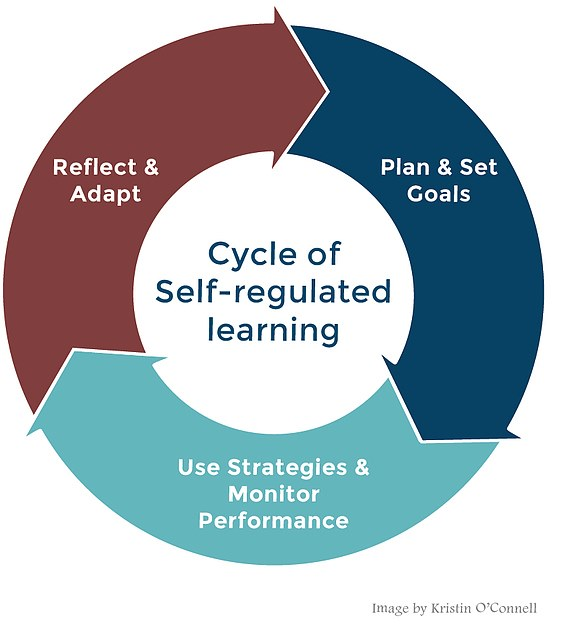

15 Registered Report and MSLQ Overview
15.1 General overview of the registered report
In this course, we are preparing you to read and appraise journal articles, and write up an empirical quantitative research project yourself. Throughout the lectures, labs, and independent learning, you will learn how to formulate a research question, design a study, apply statistical analyses, and write up your results to communicate to others as a research report.
In your group, you decide on a topic and collectively write a stage one registered report (see the stage one AIS) which contains an introduction and method section for how you plan on addressing your research question. Individually, you will then write a stage two registered report (see the stage two AIS) which contains a results, discussion, and abstract section.
You will be working with a secondary data set that we collected over the past few years. We have data from a few thousand students and you will be able to use the data to address a research question you develop in your group, within the parameters of the variables we have available. The rest of this chapter outlines the data set you will be working with in more detail, so please read through in advance of your first lab.
15.2 Research project topic
15.2.1 MSLQ
The broad topic of the research project is self-regulated learning.
Self-regulated learning models describe learning in terms of taking control of and evaluating one’s own learning and behaviour. The study you will write up uses a questionnaire called the Motivated Strategies for Learning Questionnaire (MSLQ, Pintrich et al., 1991).
The MSLQ has two sections, motivation and learning strategies, each with multiple sub-scales. One of these scales may form part of the analysis you write up. There is more information about what each of these scales measures in the MSLQ Overview document, which you can download using this link, or you can find it on the Week 1 Moodle page.
Motivation sub-scales
Intrinsic goal orientation
Extrinsic goal orientation
Task value
Control beliefs
Self-efficacy
Test anxiety
Learning strategy sub-scales
Rehearsal
Elaboration
Organisation
Critical thinking
Meta-cognition
Time and study environment
Effort regulation
Peer learning
Help-seeking
15.2.2 Demographic variables
In addition to the MSLQ, we also have a selection of demographic information about the participants and you may choose to use one of these variables in your analysis, or use it to isolate a particular population of interest.
Age in years
Gender (male/female/non-binary)
Native vs non-native speakers
Paid employment in hours
Living at home vs living in halls
Level of study (undergraduate vs postgraduate)
Mature student vs traditional student (for undergraduate students only)
15.3 Distinguishing types of research questions
For the research question (what you want to try and answer with your project) you develop in your group, there are two main types for the designs we introduce you to in this course. First, you might be interested in the relationship between two variables, such as whether an increase in one variable is associated with an increase in another variable. Second, you might be interested in whether two groups differ on a given outcome.
For relationships, if you are thinking about which sub-scales might be correlated with each other or related, you might ask such research questions as:
Is there a relationship between help-seeking and test anxiety?
Is there an association between intrinsic goal orientation and effort regulation?
If you are thinking about which sub-scales might show group differences, you might ask such research questions as:
Do mature students have lower test anxiety than traditional students?
Do postgraduate students have higher intrinsic motivation than undergraduate students?
We will go into more detail about how to create formal research questions and hypotheses in future weeks. Starting in week 2, we will show you how to find peer-reviewed evidence to build your understanding of the variables, identify a rationale, and develop your research question and hypothesis.
Important
You will have freedom to develop a research question in your group but since you are using secondary data, there are constraints. Keep in mind you only have the variables listed above available to you. This course is also introductory, so we intentionally restrict you to focusing on two variables. You will learn how to test more complex research questions in RM2 / semester 2.
15.4 MSLQ suggested variable pairs
Now you have an understanding of what the MSLQ project is, we have a list of variable pairs that have worked well in the past and we know that there is some existing literature to base your study on. We would like you to read through these pairs for different types of designs you will learn about in the semester. When you complete the variable preference form, you will put your name down next to the pair you are most interested in, and we will use this to try and organise people into groups with similar interests. Just keep in mind we cannot always match people as there might be too many people with the same interests per lab, so there will still be an element of randomness to your groups.
Can I still change my mind?
This seems like a big decision to make so early, but we use your initial interests to arrange people into groups when you might not know other people in your lab yet. You can choose different variables once you are in your groups, but we outlined these as we know they can work well together for the report, and you must make any changes in collaboration with all the members of your group. Once you settle on two variables, you might also focus on a specific population in your group as you develop your rationale, like focusing on postgraduate students if you recognise there is a gap in the literature, so there is still creative freedom beyond choosing the variable pairs.
15.4.1 Variable pairs for comparing two groups
Test anxiety and undergraduate vs postgraduate, or years 1 and 2 vs years 3-5 (pre-honours vs honours at the University of Glasgow)
Help-seeking and first vs second language
Meta-cognitive self-regulation and non-mature vs mature undergraduate student status
Meta-cognitive self-regulation and undergraduate vs postgraduate study, or years 1 and 2 vs years 3-5 (pre-honours vs honours at the University of Glasgow)
Self-efficacy and undergraduate vs postgraduate study
Intrinsic motivation and undergraduate vs postgraduate study
15.4.2 Variable pairs for the association between two variables.
Self-efficacy and help-seeking
Test anxiety and meta-cognitive self-regulation
Test anxiety and self-efficacy
Self-efficacy and help-seeking
Intrinsic motivation and age
Try this
Now you have read through the MSLQ and project overview, think about which variable pairs interest you the most and put your name down next to the pair that you want to start exploring on the variable interest form (available on Moodle). We will start putting you in groups in week 2 so you have as much time as possible to work on your group project.